はじめに
Autonomous Database ではReal Application Clusters(RAC)やAutomatic Storage Management(ASM)などの高可用性技術が事前構成済みです。そのため、単一のDBサーバー障害やストレージ障害については、RTO/RPOがほぼ0(SLO: サービスレベル目標)で復旧させることが可能です。
それらに加え、有償オプションとして、大きく2種類の災害対策ソリューションが提供されています。
それがAutonomous Data Guardとバックアップベースのディザスタ・リカバリです。Autonomous Data Guard は、本番環境用インスタンス(プライマリ・インスタンス)のスタンバイ・データベースを構成する事ができます。これによって、Autonomous Database インスタンスにデータ保護およびディザスタ・リカバリを実現可能です。Autonomous Data Guard が有効になっている場合、全ノード障害やリージョン障害などの大規模障害の際に、フェイルオーバーやスイッチオーバーが可能なスタンバイ・データベースを提供します。なおAutonomous Data Guard のスタンバイ・データベースへはデータ操作や接続ができません。
バックアップベースのディザスタ・リカバリは、デフォルトで取得されている自動バックアップのコピーを、本番環境用インスタンスのリージョンと異なるリージョンに保管しておくことができます。こちらもAutonomous Data Guard と同様、リージョン障害時に別のリージョンで本番環境と同等の環境をバックアップから構成することで、ディザスタ・リカバリを実現可能です。
目次
所要時間: 約30分
1. Autonomous Data Guard
まずはスタンバイ・データベースを構成するAutonomous Data Guard を有効化してみます。
Autonomous Database はSLA 99.95%で提供されますが、Autonomous Data Guard構成時にはSLA 99.995%で提供されます。
Autonomous Data Guard には2種類あり、プライマリ・インスタンスと同じリージョンにスタンバイ・データベースを構成するローカル Autonomous Data Guardと、異なるリージョンにスタンバイ・データベースを構成するクロス・リージョン Autonomous Data Guardがあります。
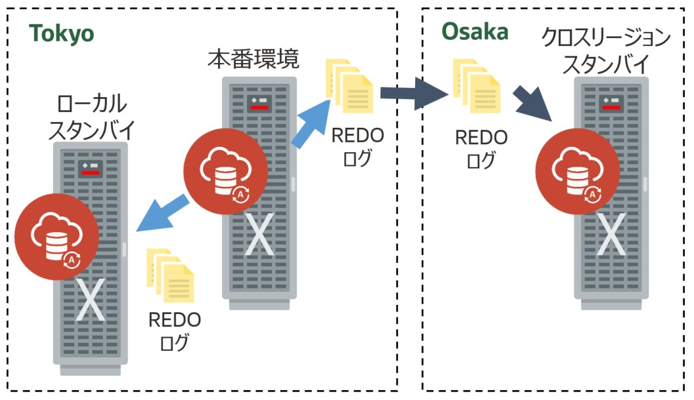
ローカルとクロス・リージョンでは、対応できる障害やRPO/RTO、追加コストが異なります。以下をご参照ください。
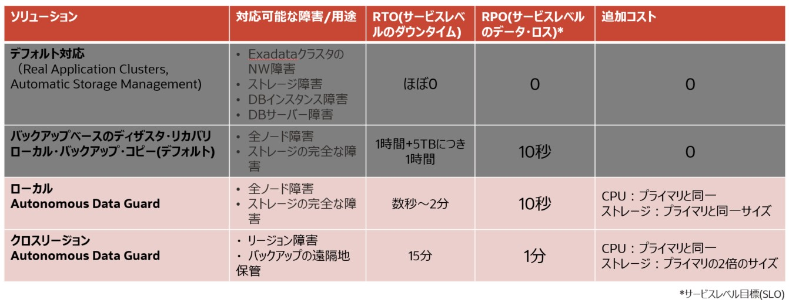
なおローカルAutonomous Data Guard では、複数のAvailability Domain(AD)のあるリージョンでは、異なるAD上にプロビジョニングされ、1つのADのみあるリージョンでは、スタンバイ・データベースはプライマリと異なるFault Domain(異なるExadata環境)上にプロビジョニングされます。これにより、全ノード障害やストレージの完全な障害などの物理マシン全体が被害を受けるケースにおいても、スタンバイ・データベースは異なる環境にあるため復旧することが可能です。
コストについて、例えばプライマリ・インスタンスを10ECPU、ストレージ1TBのADBで運用していた場合、それぞれの追加コストは以下のようになります。
- ローカル Autonomous Data Guard: 10ECPU、ストレージ1TB
- クロス・リージョン Autonomous Data Guard: 10ECPU、ストレージ2TB
なおスタンバイ・データベースでは、プライマリ・インスタンスの自動スケーリングでスケールした分のCPU課金は発生しません。設定ECPUのみの課金となります。
1-1. ローカルAutonomous Data Guard の有効化
実際にAutonomous Data Guard を有効化してみます。
-
Autonomous Databaseの詳細画面の[ディザスタ・リカバリ]のAutonomous Data Guardにアップグレードをクリックします。デフォルトではプライマリ・インスタンスと同じリージョンにバックアップが取得されているため、『ローカル: バックアップベース』と記載されています。
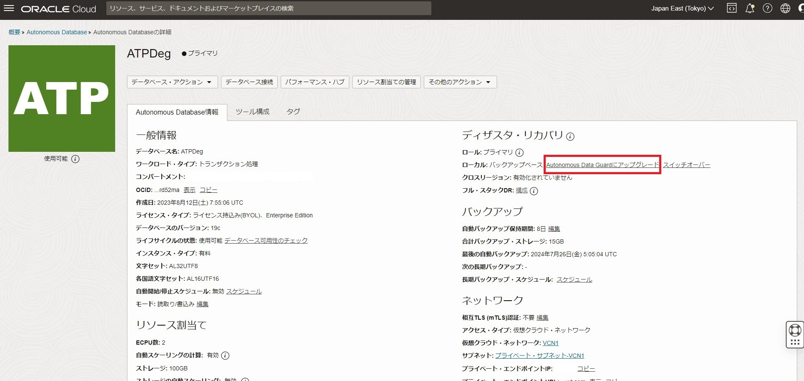
-
今回プライマリ・インスタンスは東京リージョンに作成してあるため、リージョンは東京となっています。ディザスタ・リカバリ・タイプとして、Autonomous Data Guard とバックアップベースのディザスタ・リカバリの2種類表示されています。上記の通りローカルのバックアップベースのディザスタ・リカバリはデフォルトで構成されている自動バックアップと同義のため、こちらを選択しても構成に変更は起きません。Autonomous Data Guard を選択し、送信ボタンをクリックします。
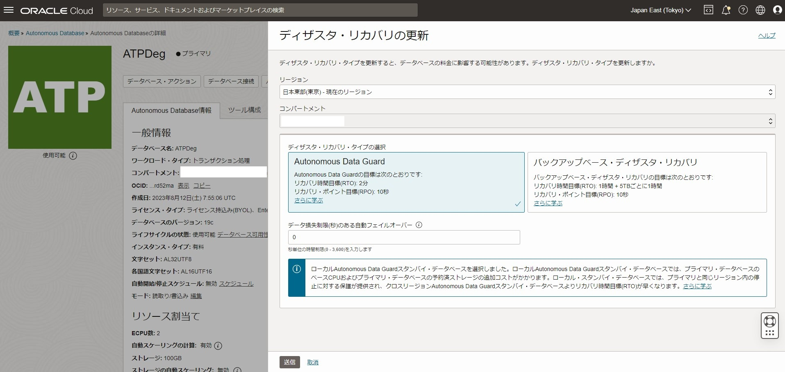
（補足） データ損失制限(秒)のある自動フェイルオーバーについて
ローカル Autonomous Data Guard では障害発生時の自動フェイルオーバーがサポートされています。
プライマリ・インスタンスが利用できなくなり、ユーザーが接続できない場合、ローカルのスタンバイ・データベースが利用可能であれば自動的にスタンバイ・データベースにフェイルオーバーします。
自動フェイルオーバーを行うのは、データ損失が上記で0(デフォルト)~3600秒の間で設定した制限内であることを保証できる場合のみです。
例えばデータ損失制限を60秒と設定した場合に、データ損失が60秒以内であれば自動フェイルオーバーを実施しますが、60秒以上であれば自動フェイルオーバーは行いません。この場合はユーザーによる手動フェイルオーバーでの復旧が必要となります。
-
画面左上のステータスがオレンジ色の更新中に変化しました。完了するまで数分待ってみましょう。なおスタンバイ・データベースの構成中であっても、データベース操作に影響はなく、ダウンタイムは発生しません。
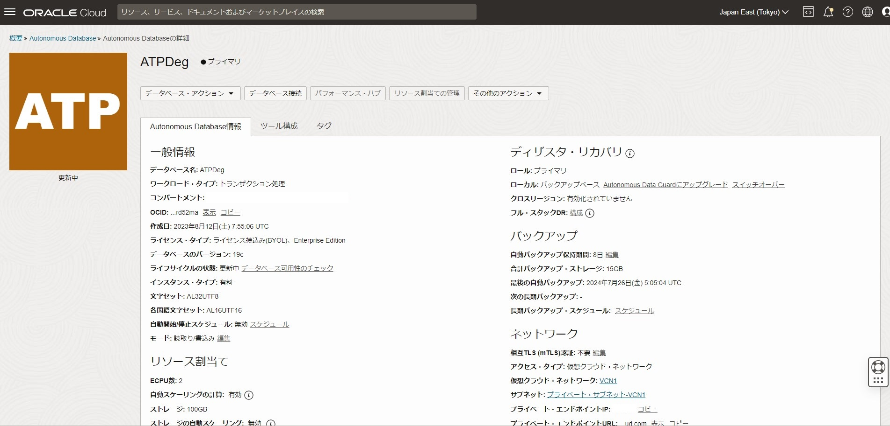
-
プロビジョニングが完了し、ステータスが緑色の使用可能に戻りました。ADBの詳細画面の[ディザスタ・リカバリ]はローカル: Autonomous Data Guardに変更されています。また左下の[リソース]のディザスタ・リカバリをクリックすると、以下のようにDRタイプがAutonomous Data Guard表示になっています。
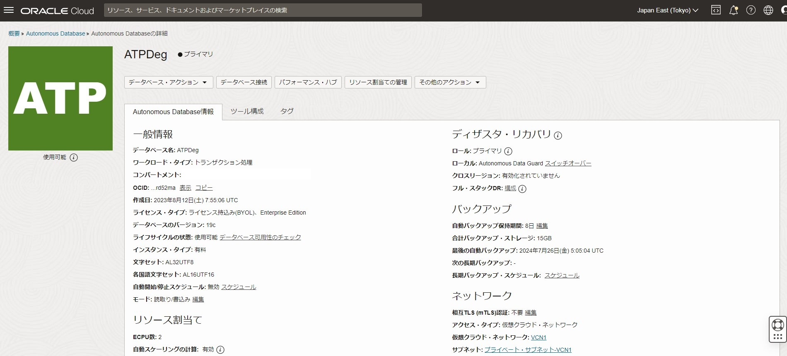
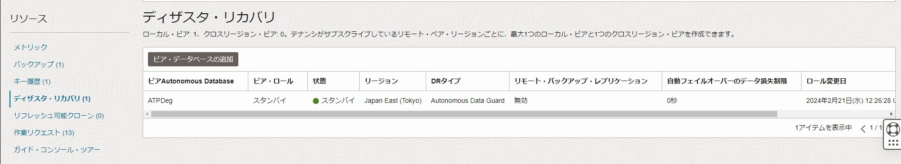
-
ここでターミナルからADBにSQL*Plusで接続してみます。現在のプライマリ・インスタンスの情報を下記のSQL文で確認します。
sqlplus admin/<ADMINユーザのパスワード>@<ADBの接続サービス>SELECT DBID, NAME, DB_UNIQUE_NAME FROM V$DATABASE;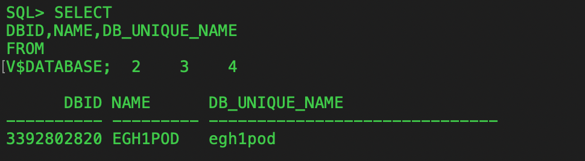
スイッチオーバーの前後でDBID、NAME、DB_UNIQUE_NAMEが変化することを確認したいと思うので、SQLの出力結果をメモ帳などにメモしておいてください。
1-2. Autonomous Data Guard のスイッチオーバー
Autonomous Data Guard を有効化できたので、続いてスタンバイ・データベースにスイッチオーバーして、ロール変更します。 スイッチオーバーは一般的に、実際の障害時のフェイルオーバーのテスト目的で行われます。スイッチオーバー後は、これまでのスタンバイ・データベースがプライマリに、これまでのプライマリ・インスタンスがスタンバイに変更されます。
-
ADB詳細画面に戻り、スイッチオーバーをします。ADBの詳細画面の[ディザスタ・リカバリ]のスイッチオーバーをクリックして下さい。
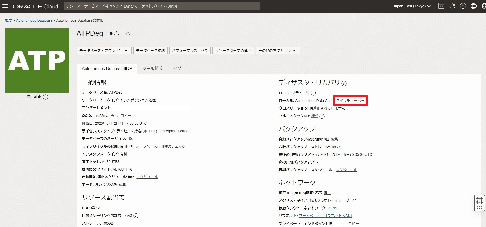
-
DB名の入力確認があるので、以下のように入力してスイッチオーバーします。
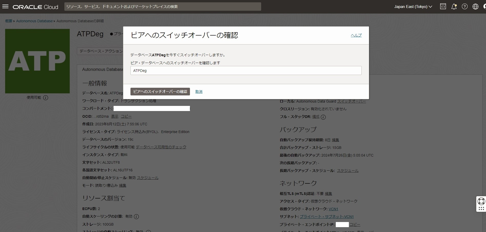
-
数分でスイッチオーバーが完了しました。ここでターミナルからADBにSQL*Plusでログインしましょう。スイッチオーバー後のプライマリの情報を下記のSQL文でクエリします。
sqlplus admin/<ADMINユーザのパスワード>@<ADBの接続サービス>SELECT DBID, NAME, DB_UNIQUE_NAME FROM V$DATABASE;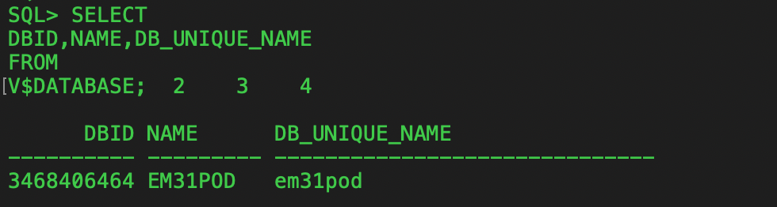
問合せたDBID、NAME、DB_UNIQUE_NAMEは、スイッチオーバー前に接続していたDBとは異なる情報です。適切にスイッチオーバーされたのが確認できます。
1-3. クロスリージョンAutonomous Data Guard
続いてクロスリージョンでのAutonomous Data Guard を構成してみます。プライマリを東京に作成している場合、クロスリージョンでのスタンバイ・データベースの作成先としては、大阪・ソウルリージョンがあります。
-
ADBの詳細画面の左下、リソースの[ディザスタ・リカバリ]をクリックし、ピア・データベースの追加をクリックします。
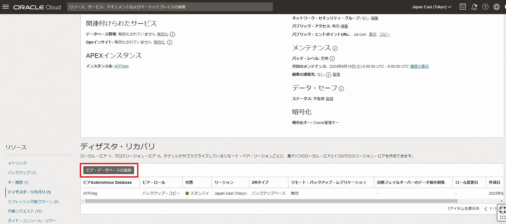
-
リージョンを選択すると、ディザスタ・リカバリ・タイプの選択ができます。Autonomous Data Guardを選択します。
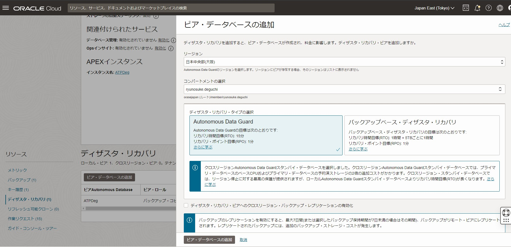
（補足） クロスリージョン・バックアップ・レプリケーションの有効化について
デフォルトではクロスリージョン・スタンバイ・データベースでは、プライマリと異なり自動バックアップが取得されません。そのためスタンバイ・データベースにスイッチオーバー/フェイルオーバーした直後は、自動バックアップを使用したリストアやクローニングが実行できません。
しかしこの機能を有効化すると、最大7日間までの自動バックアップがスタンバイ側リージョンにレプリケートされるため、最大7日間以内であれば、新プライマリ(旧スタンバイ)DBをリストア、クローニングすることができます。
なおレプリケートされたバックアップは、7日後もしくは自動バックアップの保持期間が7日未満の場合は、その保持期間の日数が経過すると削除されます。またレプリケートされたバックアップは、バックアップ分の追加コストが発生します。
-
プライマリ・インスタンスのネットワーク・アクセス・タイプがプライベート・エンドポイント・アクセスの場合、スタンバイのネットワーク・アクセスを設定する必要があります。ここでは大阪側のVCNとサブネットを選択して、ピア・データベースの追加をクリックします。
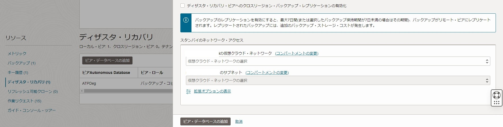
-
画面左上のステータスがオレンジ色の更新中に変化しました。完了するまで数分待ってみましょう。なおスタンバイ・データベースの構成中であっても、データベース操作に影響はなく、ダウンタイムは発生しません。
-
スタンバイ・データベースが構成されると、以下のように大阪リージョンにDB名_KIXというインスタンスが作成されます。
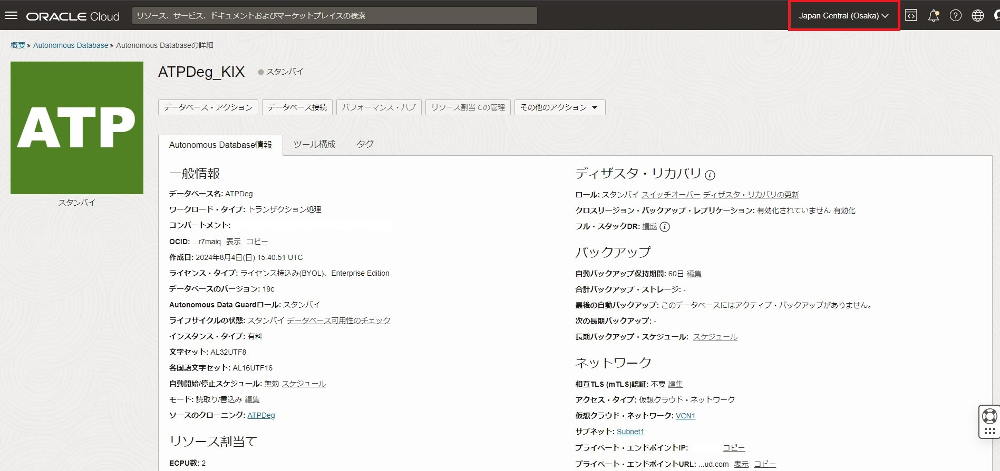
クロスリージョンAutonomous Data Guard では、自動フェイルオーバーがサポートされていないため、ユーザーによる手動フェイルオーバーを行う必要があります。
実際の障害時には、まずローカルAutonomous Data Guard と同じ要領でスイッチオーバーを試みます。スイッチオーバーが失敗した場合、OCIコンソール上にフェイルオーバーを行うリンクが表示されます。ここではデータ損失が発生し得る時間も同時に表示されます。以下がサンプルです。
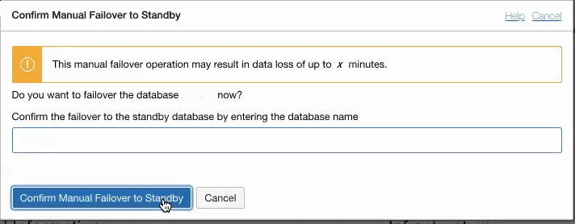
Autonomous Database は、RTO: 15分、RPO: 1分というサービスレベル目標(SLO)を基準にフェイルオーバーを行います。
1-4. Autonomous Data Guard のその他の機能
Autonomous Data Guard には、本記事でご紹介した以外にもいくつか補足機能があります。
-
スナップショット・スタンバイ
Autonomous Data Guard で作成したスタンバイ・データベースは、データ操作はもちろんDB接続はできませんが、このスナップショット・スタンバイ機能を使用すれば、2日間までであれば読み書き可能なインスタンスとしてスタンバイ・データベースを活用できます。スナップショット・スタンバイになっている間は、プライマリからのREDO(更新データ)は転送されるものの、適用はされません。ユーザーが明示的にスナップショット・スタンバイから通常のスタンバイ・データベースに戻すか2日間が経過すれば、プライマリに自動的に再接続されます。そしてスナップショット・スタンバイ中に更新されたデータは破棄され、REDOの適用が再開されます。
スタンバイ・データベースの詳細画面から、[その他のアクション]のスナップショット・スタンバイ・データベースへの変換をクリックします。
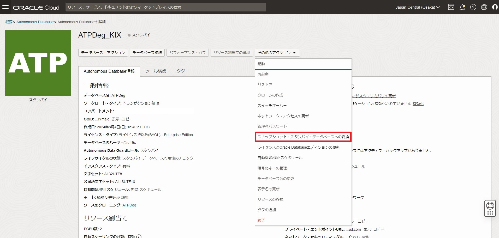
ソース・データベース名(プライマリ)を入力して変換を行います。
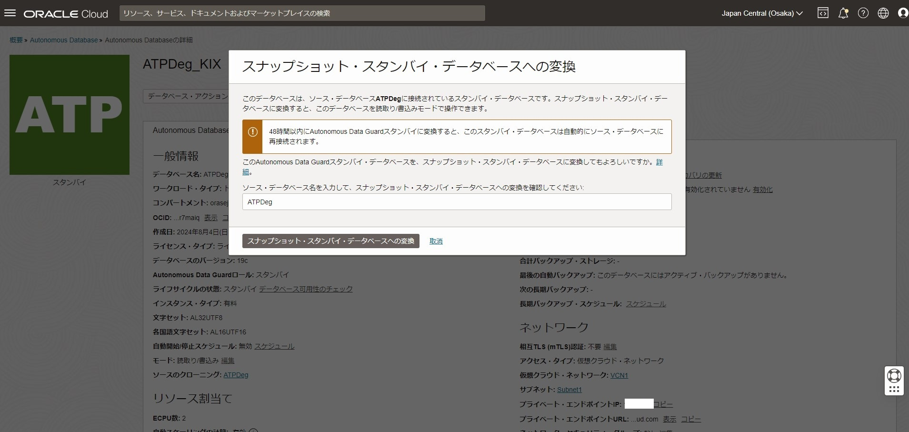
これでスタンバイ・データベースは最大2日間読み書き可能なインスタンスになりました。通常のスタンバイ・データベースに戻す際は、ディザスタ・リカバリ・ピア・データベースへの変換をクリックします。
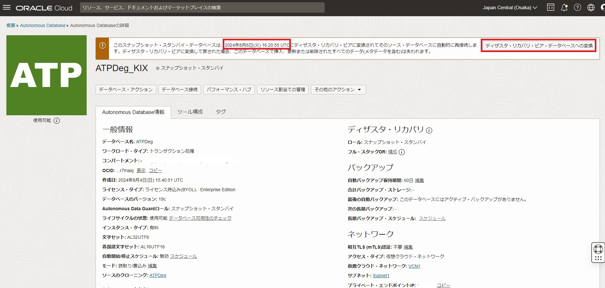
-
クロステナンシのAutonomous Data Guard Autonomous Data Guard では、プライマリと異なるテナンシにスタンバイ・データベースを作成することができます。Autonomous Data Guard の本来の目的であるスイッチオーバー、フェイルオーバーを異なるテナンシにできることに加え、Autonomous Database を他のテナンシに移行する際にもこちらの機能を利用することができます。
具体的な手順については、こちらをご参照ください。
-
スタンバイ・データベースに関するイベント通知 Autonomous Data Guard でスタンバイ・データベースを構成する場合、OCI EventsやOCI Notificationsサービスと組み合わせて、以下のようなイベント通知をすることができます。ユーザーはこれらを受け取って、障害発生時の対応や状況確認をよりスムーズに行うことができます。
- 自動フェイルオーバーの開始/終了(ローカルAutonomous Data Guard のみ)
- Autonomous Data Guard の無効化の開始/終了
- Autonomous Data Guard の有効化の開始/終了
- 手動フェイルオーバーの開始/終了
- スイッチオーバーの開始/終了
EventsやNotificationsとの連携方法については、こちらをご参照ください。
2. バックアップベースのディザスタ・リカバリ
ここではバックアップベースのディザスタ・リカバリを有効にしてみます。
2-1. ローカル・バックアップベースのディザスタ・リカバリ
ADBではデフォルトで自動バックアップが取得されています。自動バックアップがローカル(ADBインスタンスと同じリージョン)・バックアップコピーとして取得されています。そのため、追加コストとしては発生せず、自動バックアップ分の課金のみになります。
ADBの詳細画面の[リソース]のディザスタ・リカバリをクリックすると、デフォルトでは以下のようになっています。
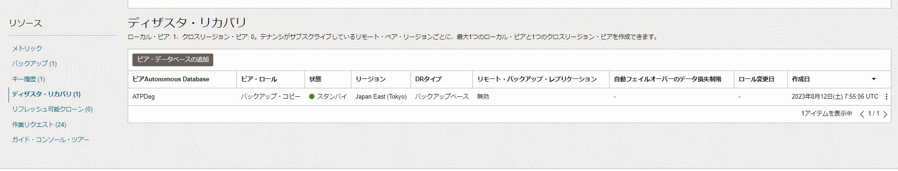
※ADBプロビジョニング直後など自動バックアップが取られていない場合、表示されないケースがあります。
このバックアップコピーの右の3点リーダーをクリックすると、以下の項目が表示されます。
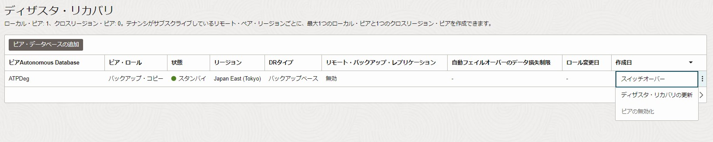
-
スイッチオーバー: 現在プロビジョニングされているExadata環境と異なるExadata環境に、バックアップからインスタンス化することでスイッチオーバーします。スイッチオーバーまでの時間はADBストレージ量に比例して長くなります。 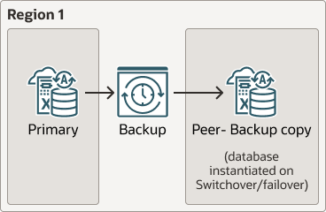
- ディザスタ・リカバリの更新: バックアップコピーからローカルAutonomous Data Guard にディザスタ・リカバリ・タイプを変更します。
- ピアの無効化(クリック不可): ローカル・バックアップコピーは自動バックアップ同様無効化できません。
2-2. クロスリージョン・バックアップベースのディザスタ・リカバリ
ローカルとは別に、ADBがプロビジョニングされているリージョンと異なるリージョンに、バックアップコピーを取っておくことができます。クロスリージョンの場合はローカルとは異なり、追加コストとしてコピーするバックアップ(プライマリで課金される自動バックアップに必要なストレージ)の2倍の課金がかかります。
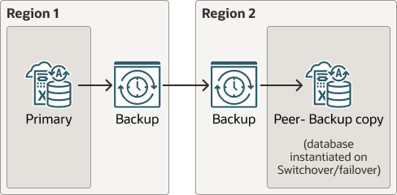
それではクロスリージョンのバックアップベースのディザスタ・リカバリを有効にしてみます。
ADBの詳細画面の[リソース]のディザスタ・リカバリをクリックして、ピア・データベースの追加をクリックします。
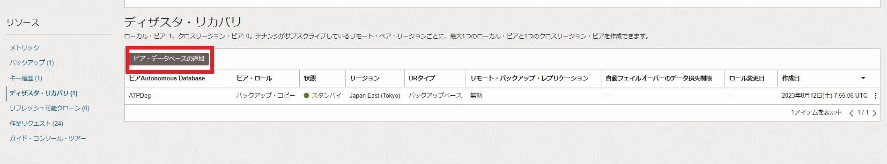
次にリージョンを選択します。東京リージョンの場合、大阪リージョンとソウルリージョンが選択できます。ここでは大阪リージョンを選択します。
ディザスタ・リカバリ・タイプの選択は、バックアップベース・ディザスタ・リカバリを選択します。
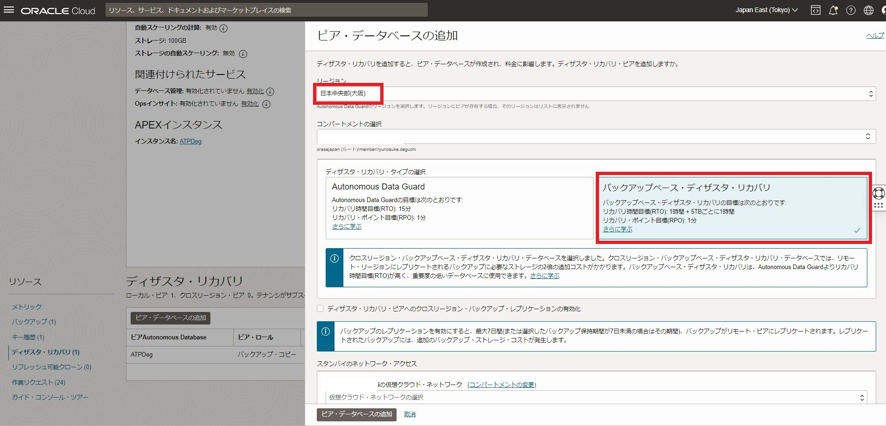
クロスリージョン・バックアップ・レプリケーションの有効化については、1-3. クロスリージョンAutonomous Data Guardに記載があるので、そちらをご参照ください。
プライマリ・インスタンスのネットワーク・アクセス・タイプがプライベート・エンドポイント・アクセスの場合、スタンバイのネットワーク・アクセスを設定する必要があります。ここでは大阪側のVCNとサブネットを選択して、ピア・データベースの追加をクリックします。
少し待つと、大阪リージョン側にDB名_KIXが作成されます。
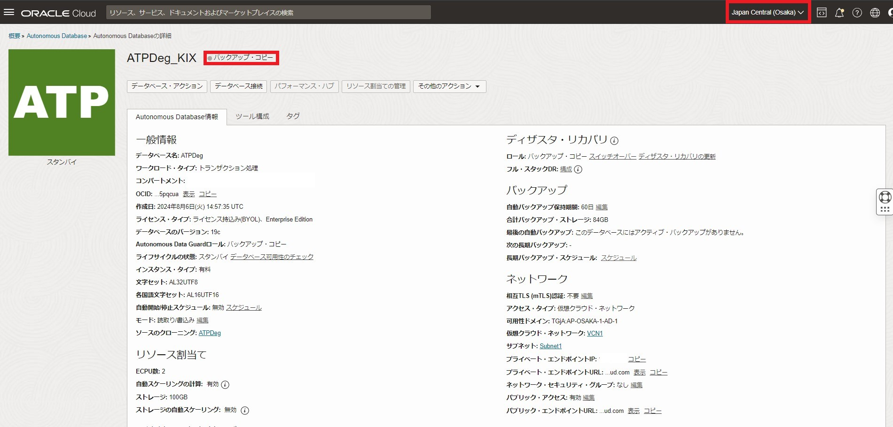
ロール: バックアップ・コピーとなっているため、このインスタンスに接続することはできません。
Autonomous Data Guard と同様の手順で、スイッチオーバーや、プライマリ障害時にはこのバックアップ・コピーを用いたフェイルオーバーが可能です。
おわりに
このチュートリアルでは、ADBで設定可能な災害対策ソリューションについてご紹介しました。ADBではデフォルトで高可用性構成になっているものの、特にミッションクリティカルなシステムでは、広域障害への対策が必要になってきます。そのような場合に今回ご紹介したソリューションが使用可能です。それぞれのソリューションで、RTO/RPO、コストが変わってくるので、システムの要件に応じてご選択いただければと思います。
以上で、この章の作業は終了です。